Escriu una cosa que s'assembla al menjador de l'institut i una que és diferent.
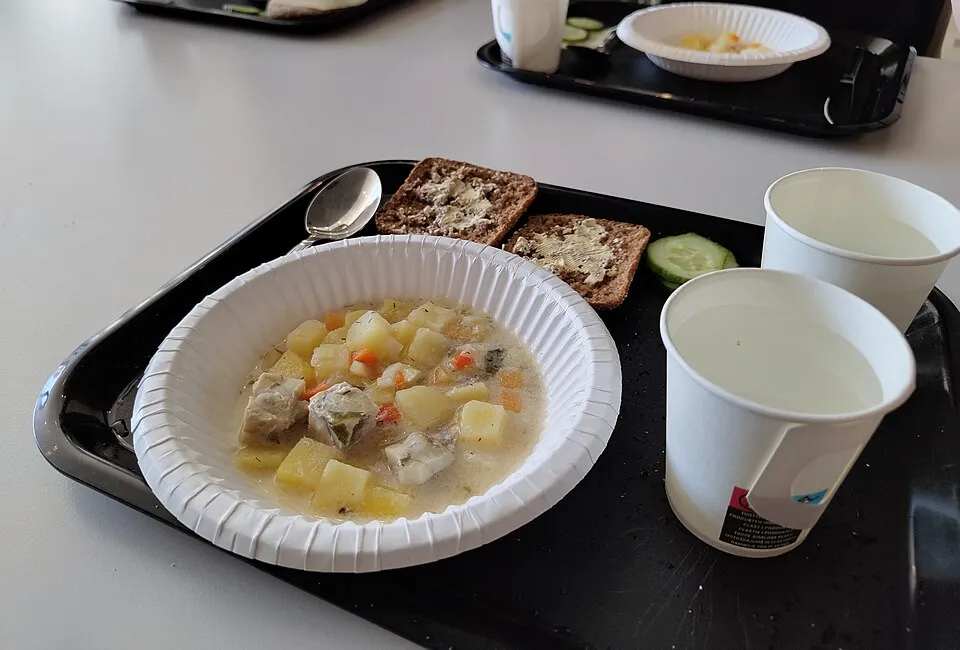
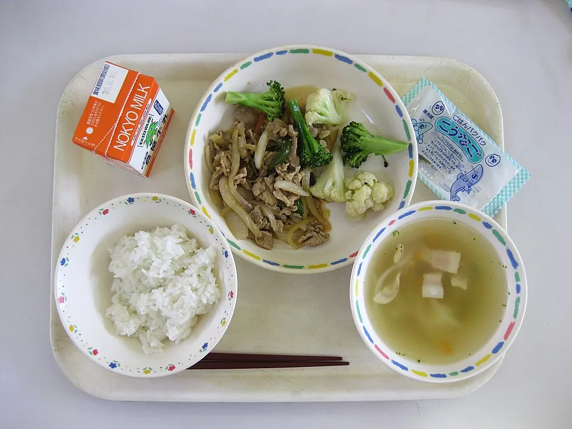
Un fet es pot comprovar. Una opinió és el que algú pensa. Marca-ho amb una creu.
| Frase | Fet | Opinió |
|---|---|---|
| El menjador obre a les dues del migdia. | ||
| Les llenties del dijous no tenen gust de res. | ||
| Cada dia es fan servir uns dos-cents gots de plàstic. | ||
| Dinar amb música seria més agradable. | ||
| A la cua, alguns dies esperem més de deu minuts. |
«Dinem massa de pressa» és una opinió. Què podríeu comptar o mesurar per convertir-la en un fet?
a) , els gots de plàstic fan molts residus.
b) Hi ha fruita cada dia. , sovint arriba verda i la llencem.
c) Només tenim trenta minuts. , molta gent menja massa de pressa.
d) , el menjador podria tenir plantes per fer-lo més agradable.
La proposta és la que ha guanyat la votació de la classe. Cada argument porta una raó (per què) i una prova (un fet, una dada o un exemple).
Què proposem?
Què demanem, a qui i des de quan?
Escriu quin connector posaràs al principi de cada part.
Fes servir l'hamburguesa. Tracta la direcció de vostè.
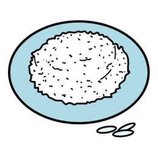
arròs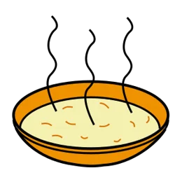
sopa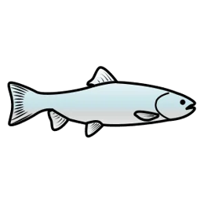
peix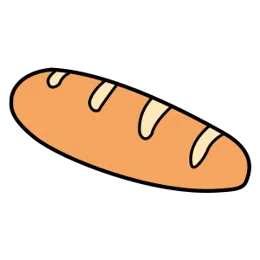
pa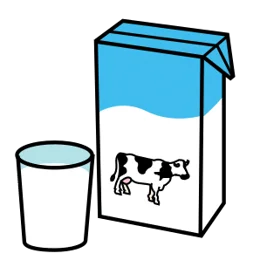
llet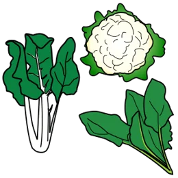
verdura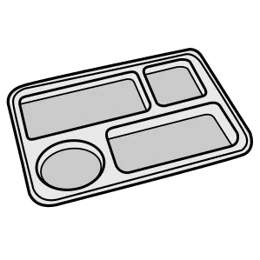
safataA Finlàndia hi ha i .
Al nostre menjador també hi ha .
Al Japó hi ha i .
Al nostre menjador no hi ha .
| Frase | Fet | Opinió |
|---|---|---|
| El menjador obre a les dues del migdia. | ||
| Les llenties del dijous no tenen gust de res. | ||
| Cada dia es fan servir uns dos-cents gots de plàstic. | ||
| Dinar amb música seria més agradable. |
Completa les frases. La proposta és la que ha guanyat la votació de la classe.
| Connector | Per a què serveix |
|---|---|
| En primer lloc | Dir la primera raó. |
| A més | Afegir una altra raó. |
| Per tant | Dir què passa per culpa d'això. |
a) , els gots de plàstic fan molts residus.
b) Només tenim trenta minuts. , molta gent menja massa de pressa.
c) , el menjador podria tenir plantes.
Copia les frases de l'hamburguesa en ordre i millora-les si pots.
Tria una idea d'aquests menjadors que podríem copiar. Explica per què funcionaria aquí i què la faria difícil.
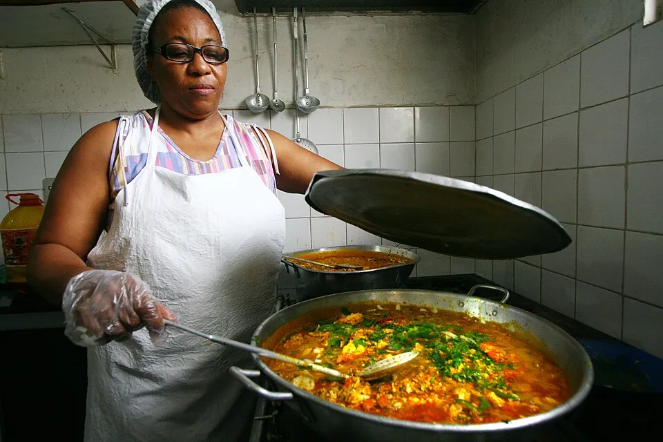
Per a cada opinió, escriu què podríeu comptar o mesurar durant una setmana per demostrar-la (o desmentir-la).
| Opinió | Com la convertim en un fet? |
|---|---|
| Dinem massa de pressa. | |
| Es llença massa menjar. | |
| El menjador és massa sorollós. |
Ajunta cada parella en una sola frase. No pots repetir connector.
a) Hi ha fruita cada dia. Sovint arriba verda i la llencem.
b) Només tenim trenta minuts. Molta gent menja massa de pressa.
c) A Finlàndia el dinar és gratuït. Aquí cada família el paga.
La proposta és la que ha guanyat la votació. Cada argument porta una raó i una prova.
Què dirà algú que no hi estigui d'acord?
Proposta: menys gots de plàstic. Contraargument: «Els gots de vidre es trenquen i s'han de rentar.» Llegeix dues respostes:
| R1 | Això no és veritat. Els gots de vidre són molt millors i tothom ho sap. |
|---|---|
| R2 | És cert que el vidre es pot trencar. Tanmateix, a Finlàndia fa anys que fan servir gots durs de plàstic reutilitzable, que no es trenquen i van al rentaplats. Per això, continuem pensant que podem deixar els gots d'un sol ús. |
Quina és millor? Explica-ho amb els tres criteris.
Escriu la refutació del contraargument que has posat a l'hamburguesa. Segueix els tres criteris.
Inclou-hi el contraargument i la refutació abans de la conclusió. Tracta la direcció de vostè.
Llegeix la paraula en català. Escriu-la en la teva llengua.
Escriu o dibuixa.
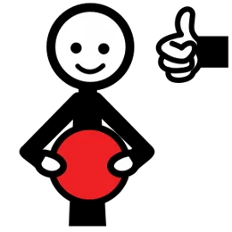
M'agrada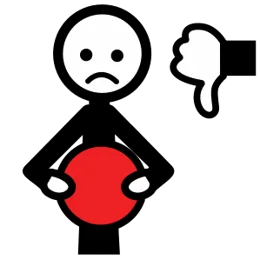
No m'agradaM'agrada . No m'agrada .
Dibuixa una safata del teu país. Escriu el nom de tres menjars. Ho explicaràs a la classe: ets l'expert/a.
Al meu país, per dinar, mengem i .
La classe escriu una carta a la direcció. Tria què vols canviar (marca'n un).
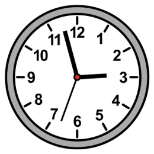
més temps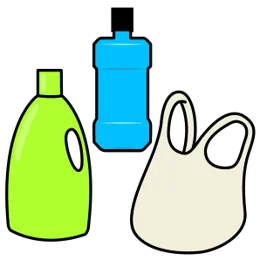
menys plàstic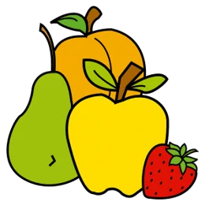
fruita bonaJo proposo perquè .
Escriu la mateixa frase en la teva llengua. Anirà a la carta.